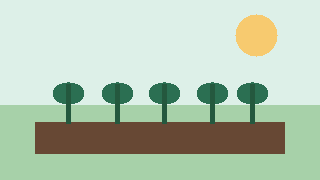

Vườn cộng đồng mở buổi đổi hạt giống
Nhóm tình nguyện tại vườn cộng đồng tổ chức một buổi đổi hạt giống vào sáng thứ Bảy.
Người tham gia mang hạt giống đã ghi tên và trao đổi cách chăm cây trong mùa khô.
Nội dung ẩn không thuộc bài viết.
